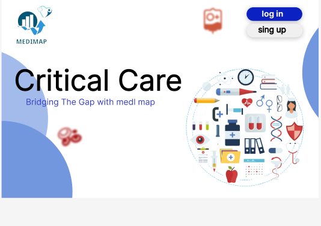

*Nurseries and intensive care: their role and importance in children’s development:
Nurseries and intensive care represent one of the most important educational and social environments that greatly influence the growth and development of children at an early age
These settings are a safe and stimulating place that provides comprehensive and educational care that meets the needs of young children and promotes their physical and psychological development.
1-Promote social and emotional development:
Nurseries provide an educational environment that encourages social interaction and learning acceptable societal values and behaviors.
2-Developing language and motor skills:
Through educational activities and games, preschools enhance language and motor skills in young children.
3-Early learning support:
Nurseries provide structured educational programs that contribute to the development of basic skills such as creative thinking and creative solutions to problems.
4-Family psychological support:
Nurseries are an important resource for families, providing emotional and social support and providing advice on raising children.
*Intensive care homes:
1-Specialized medical care:
Intensive care provides advanced medical care for children who require special care as a result of complex health conditions or critical medical conditions.
2-Comprehensive family support:
Intensive care provides comprehensive support to the family by providing medical advice and psychosocial support.
3-Hussein quality of life:
Intensive care aims to improve the quality of life for children with complex health conditions by providing specialized and multidisciplinary care.
*a summary:
In short, nurseries and intensive care units play vital roles in the care and development of children in their early stages.
These places provide educational and nurturing environments that support comprehensive growth and enhance the physical and mental development of children,
contributing to building a future generation more capable of social interaction and continuous learning.
Intro
Sign in

Sign in